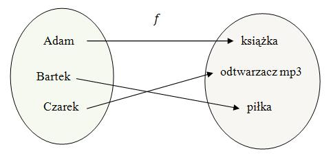
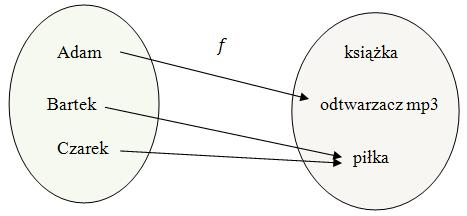
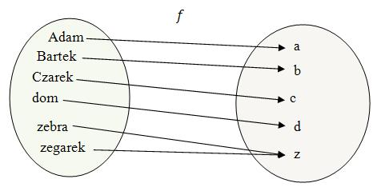
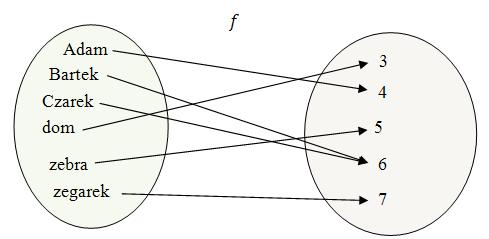

Pojęcie funkcji jest bardzo ważne i często spotykane w matematyce.
Dzięki
funkcjom możemy opisywać otaczający nas świat oraz badać zjawiska jakie w nim zachodzą.
Najczęściej funkcję definiuje się jako przyporządkowanie każdemu elementowi jednego
zbioru, dokładnie jednego elementu drugiego zbioru.
Mamy worek z trzema prezentami: piłką, książką i odtwarzaczem mp3.
Adam,
Bartek i Czarek otrzymują po jednym prezencie z tego worka.
Załóżmy, że Adam dostał
książkę, Bartek piłkę, a Czarek odtwarzacz mp3.
Takie
przyporządkowanie
przedmiotów do chłopców możemy nazwać funkcją.
Powiemy, że:
- funkcja przyporządkowuje Adamowi książkę,
- funkcja przyporządkowuje Bartkowi piłkę,
- funkcja przyporządkowuje Czarkowi odtwarzacz mp3.
Jeżeli oznaczymy naszą funkcję literką \(f\), to powyższe zdania możemy zapisać krócej: \[
f(\text{Adam}) = \text{książka}\\[6pt] f(\text{Bartek}) = \text{piłka}\\[6pt] f(\text{Czarek}) =
\text{odtwarzacz mp3} \] Funkcję możemy zilustrować za pomocą grafu: 
Funkcja wskazuje jednoznacznie jaki prezent otrzymał wybrany
chłopiec.
Jeżeli zadamy pytanie: Co otrzymał Bartek?, to otrzymamy konkretną
odpowiedź: piłkę.
Załóżmy, że Adam Bartek i Czarek losują jeden prezent z worka, który zawiera
kilka książek, piłek i odtwarzaczy mp3.
W wyniku losowania Adam otrzymał odtwarzacz mp3, a
Bartek i Czarek dostali po piłce.
Każdy z chłopców otrzymał jeden konkretny prezent, zatem to przyporządkowanie
możemy nazwać funkcją.
Powiemy, że:
- funkcja przyporządkowuje Adamowi odtwarzacz mp3,
- funkcja przyporządkowuje Bartkowi piłkę,
- funkcja przyporządkowuje Czarkowi piłkę.
Jeżeli oznaczymy naszą funkcję literką \(f\), to powyższe zdania możemy zapisać krócej: \[
f(\text{Adam}) = \text{odtwarzacz mp3}\\[6pt] f(\text{Bartek}) = \text{piłka}\\[6pt]
f(\text{Czarek}) = \text{piłka} \] Funkcję możemy zilustrować za pomocą grafu: 
Rozważmy funkcję przyporządkowująca każdemu słowu pierwszą literę danego
słowa.
Jeżeli oznaczymy naszą funkcję literą \(f\), to otrzymamy np.: \[f(\text{Adam}) =
\text{A}\] \[f(\text{Bartek}) = \text{B}\] \[f(\text{Czarek}) = \text{C}\] \[f(\text{dom}) =
\text{d}\] \[f(\text{zebra}) = \text{z}\] \[f(\text{zegarek}) = \text{z}\] Graficzna ilustracja
funkcji: 
Rozważmy funkcję \(f\) przyporządkowująca każdemu słowu liczbę liter z których
składa się dane słowo.
W tym przypadku działanie naszej funkcji będzie następujące:
\[f(\text{Adam}) = 4\] \[f(\text{Bartek}) = 6\] \[f(\text{Czarek}) = 6\] \[f(\text{dom}) = 3\]
\[f(\text{zebra}) = 5\] \[f(\text{zegarek}) = 7\] Graficzna ilustracja funkcji: 
W tym nagraniu wideo omawiam pojęcie funkcji na prostych przykładach.